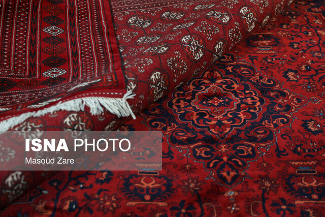
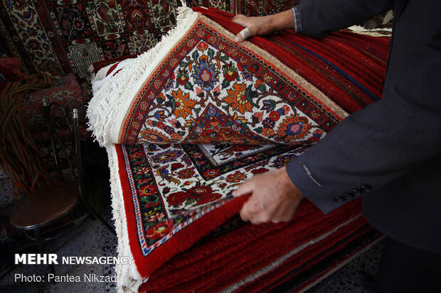
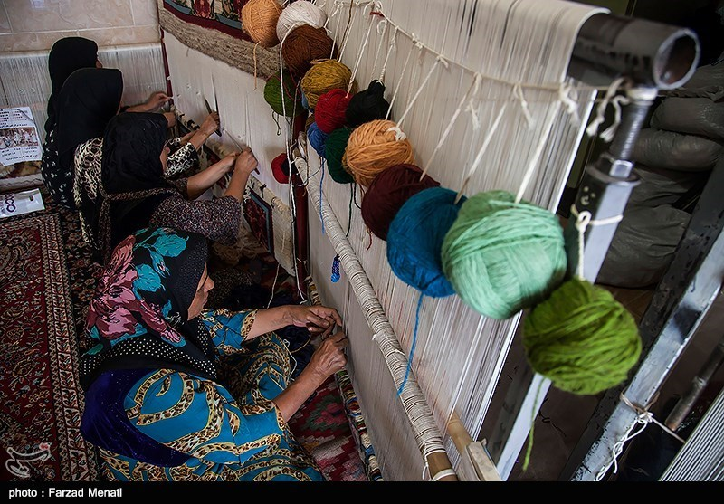
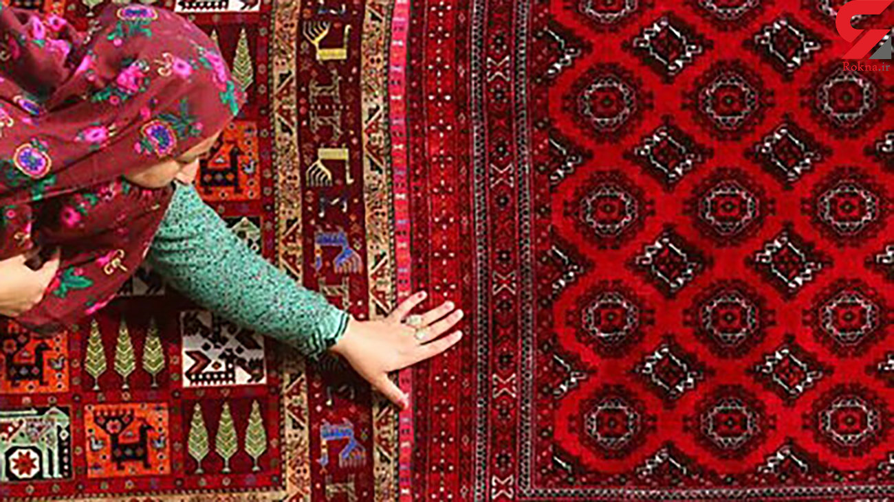
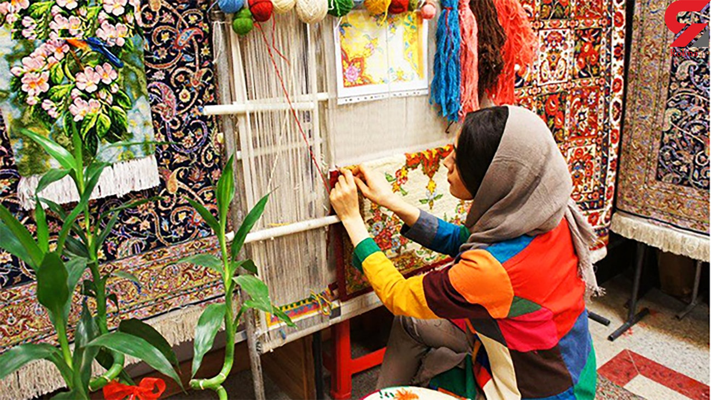

دسترسی های سریع
جدیدترین اخبار فرش ایران

درخواست تولیدکنندگان برای ایجاد سازمان فرش زیر نظر رئیس جمهوری

«سازمان ملی فرش و صنایع دستی» زیر نظر نهاد ریاست جمهوری ایجاد شود

اعتراض فعالان فرش به ادغام با صنعت اسباببازی/ بانک مرکزی معافیت فرش از تعهد بازگشت ارز را نپذیرفت

تحریم چه بر سر فرش ایرانی آورده است؟ / بازار فرش ایرانی کوچک تر شد

اعتراض فعالان فرش به ادغام با صنعت اسباببازی/ بانک مرکزی معافیت فرش از تعهد بازگشت ارز را نپذیرفت